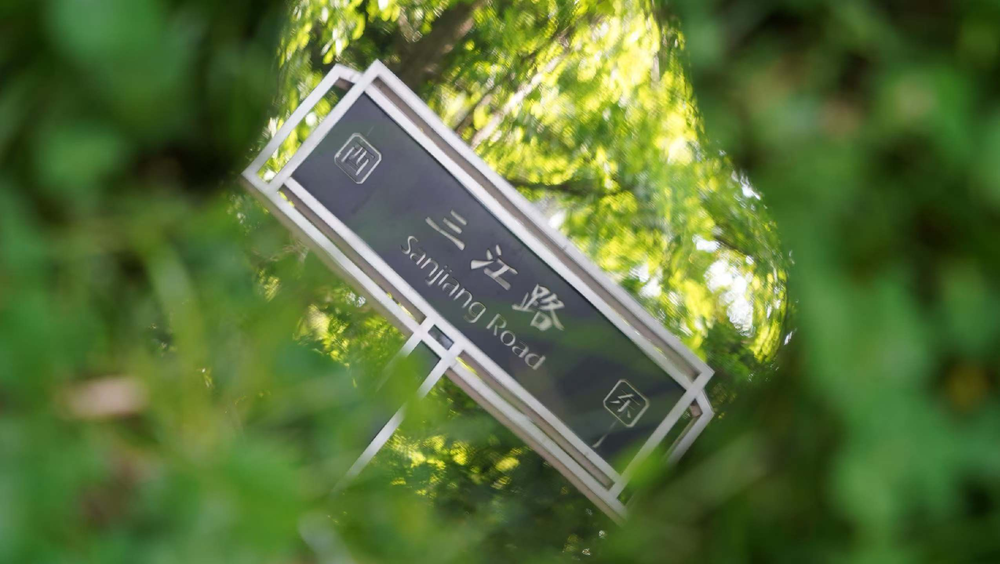
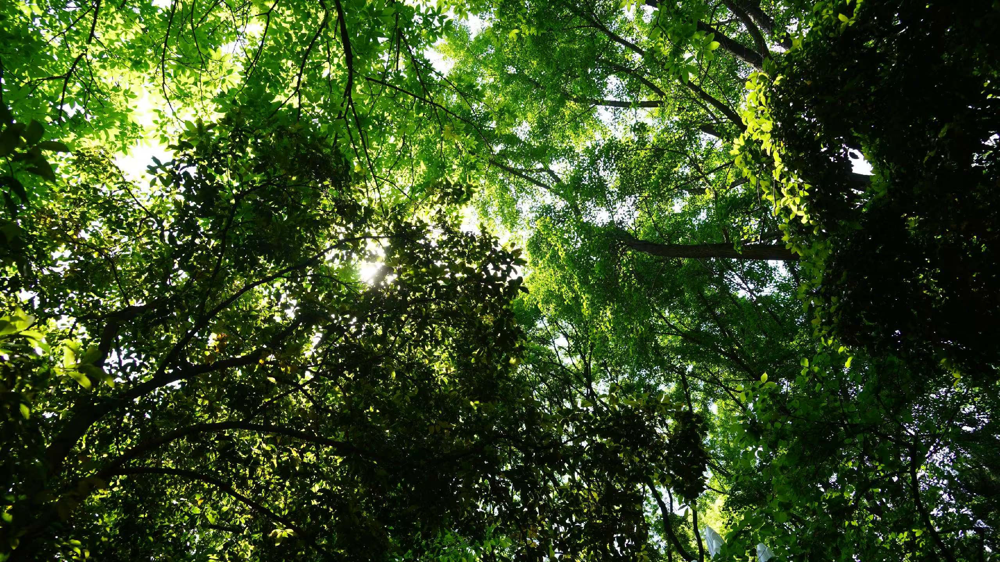
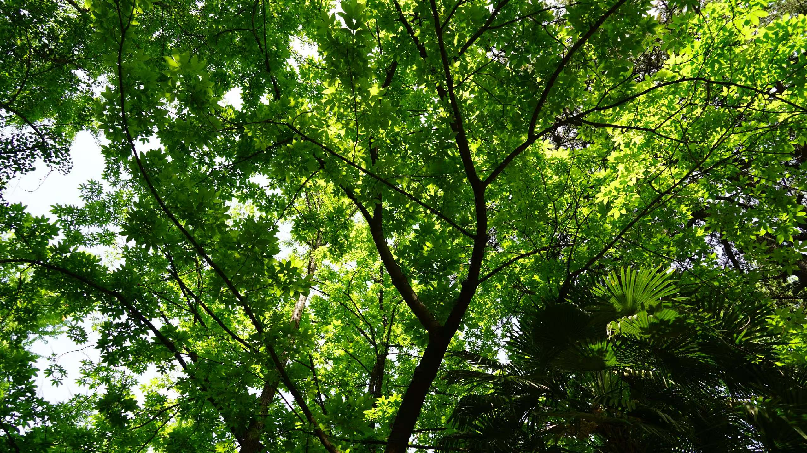
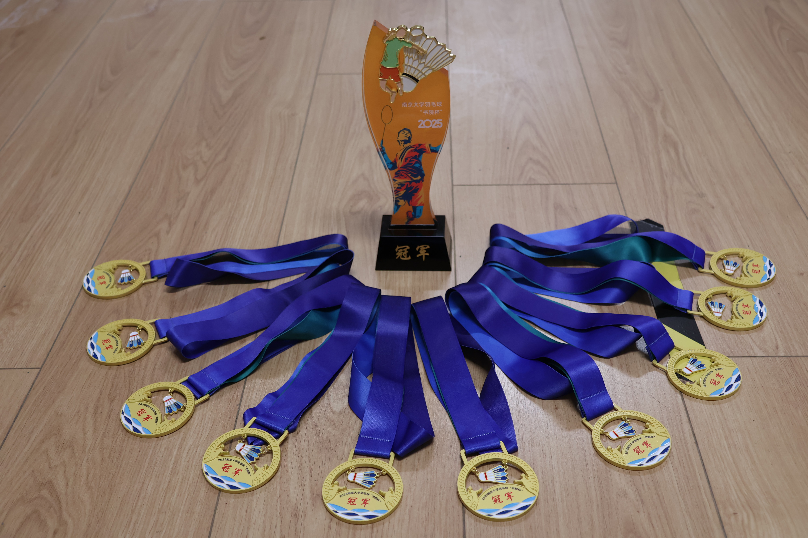
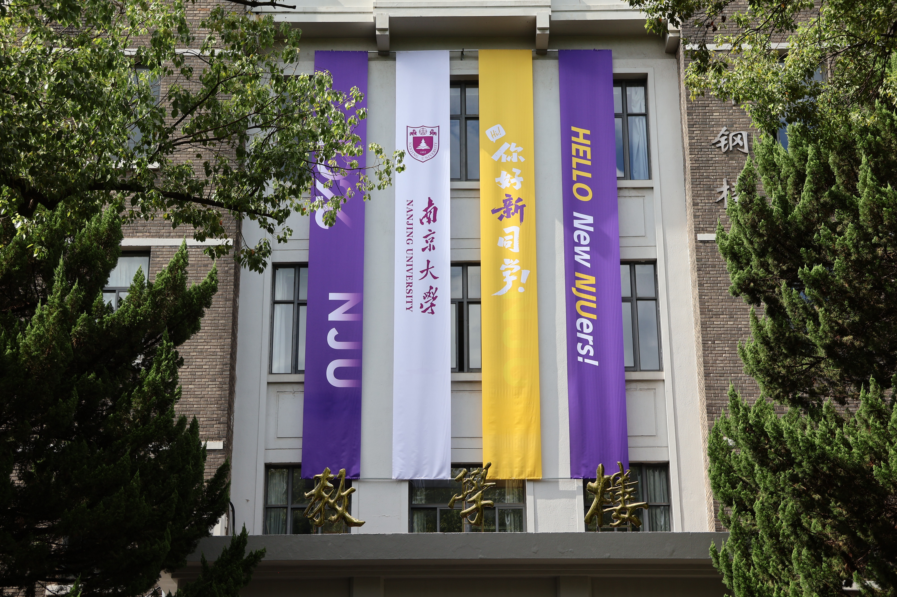
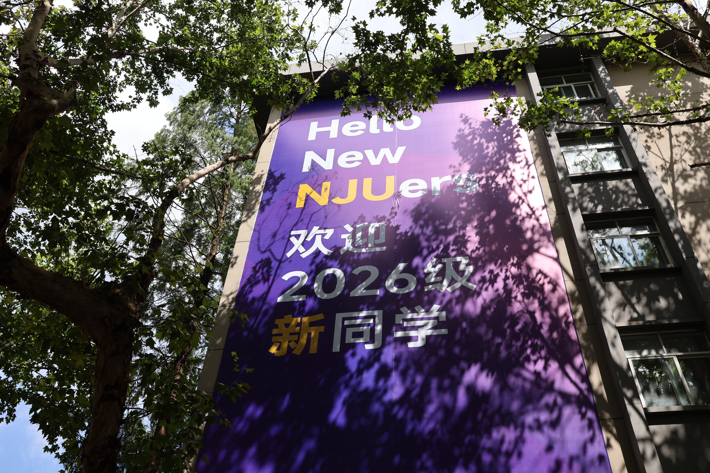
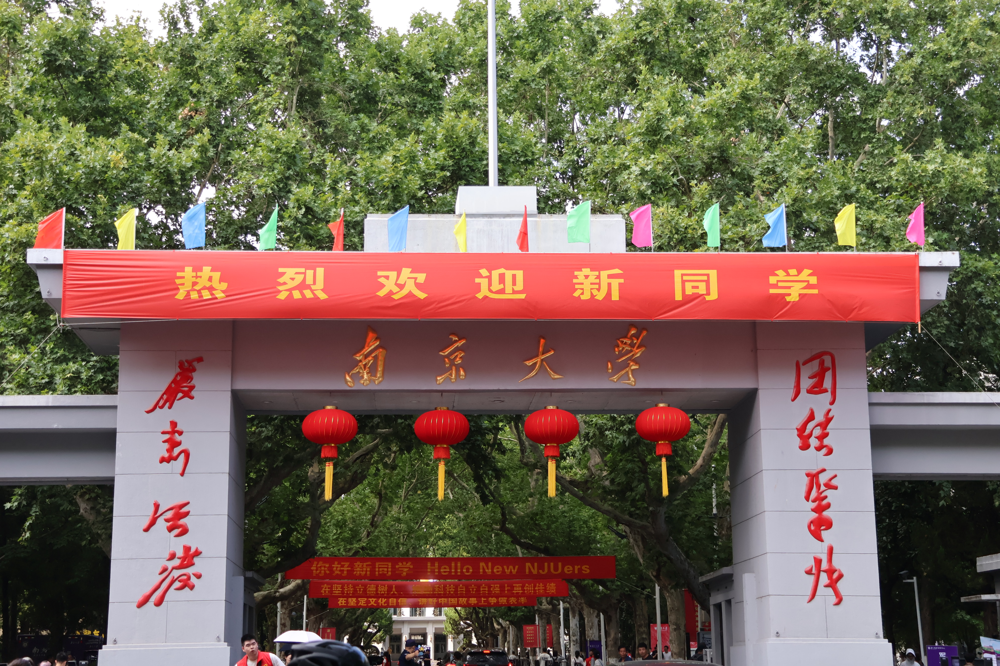
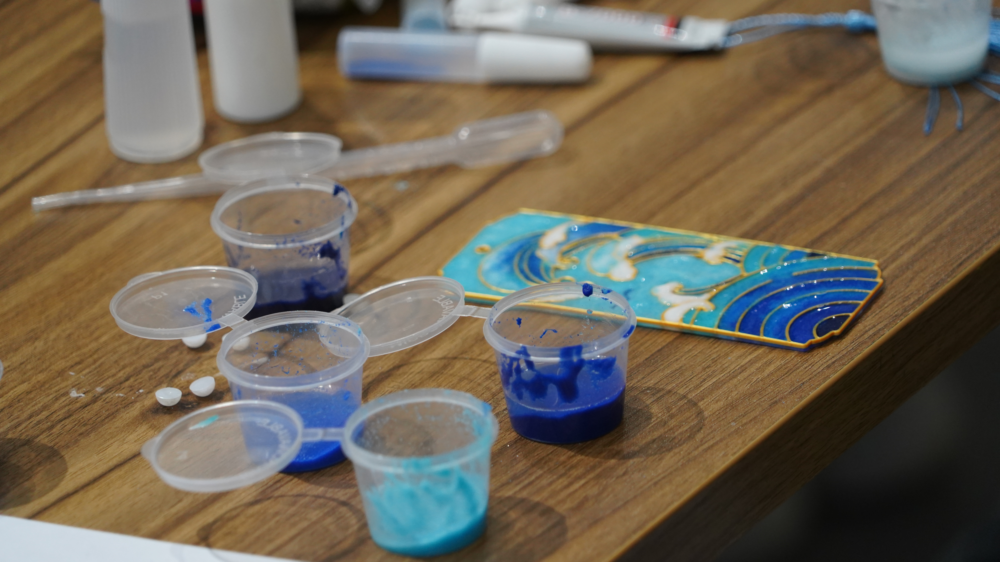
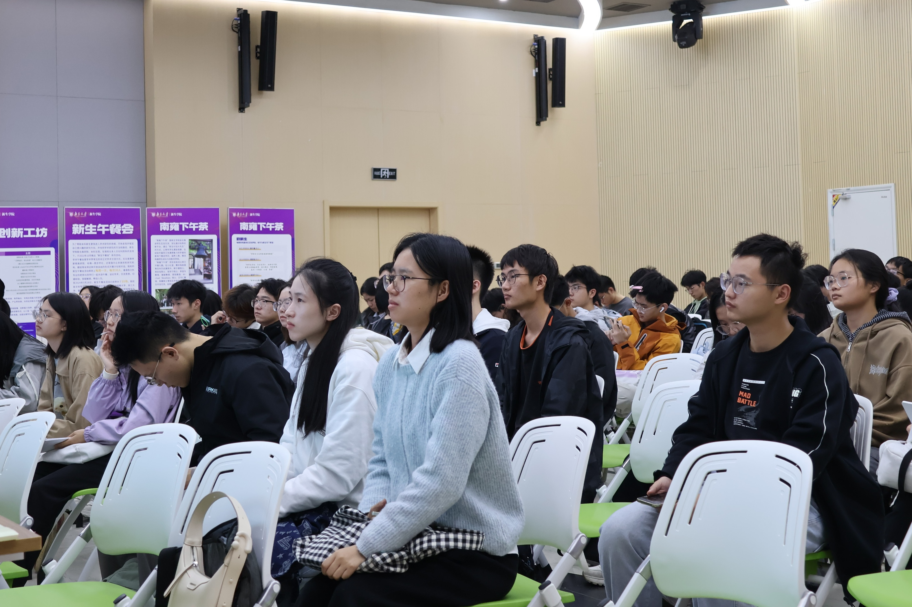
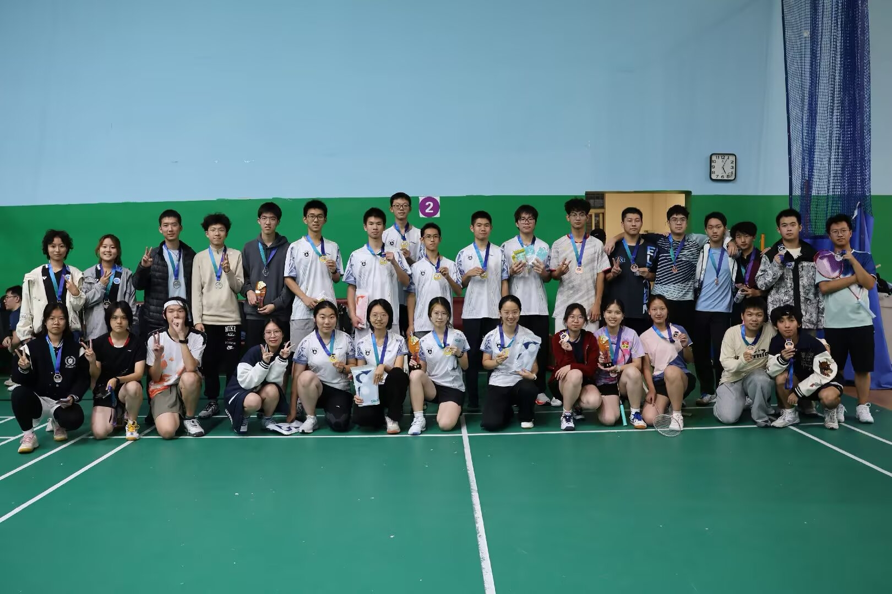

Business Administration Sophomore
大二 工商管理专业
- 管理学原理
- 微观经济学
- 宏观经济学
- 组织行为学
- 财务决策与管理
你好，我是 Yitong Liu。这里记录我的过往、兴趣与一点点未来的想象。
大二 工商管理专业
风光摄影 & 活动纪实
羽毛球狂热爱好者
健身持之以恒者
攀岩入门狂热小白
长笛九级 乐理三级
尤克里里 吉他










点击旁边的小箭头，照片就会沿着绳子滑动起来；再点一次就停下。
1.尝试制作一个个人摄影集小网站
2.探索更多关于 AI 的知识，让更多灵感生根发芽
3.尝试多种路径发展，更多的扩展自己的能力（包括学会运营互联网社群，尝试AI与管理，商业的结合）